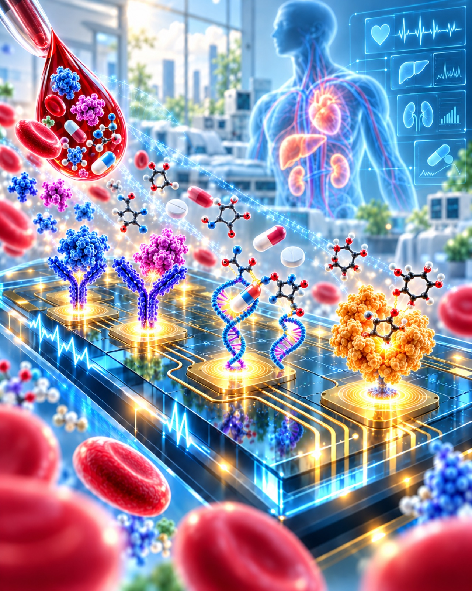

Continuous monitoring
Developing stable sensing interfaces for real-time and repeated biomarker measurement.
Research area 03
Creating integrated sensing platforms for sensitive, selective, continuous, and practical measurement of biomarkers.

Why it matters
Timely biological information can transform diagnosis, treatment decisions, and continuous health management.
We design sensors, interfaces, and integrated instrumentation that convert molecular recognition into useful signals. Our work spans electrochemical sensing, wearable formats, nucleic-acid diagnostics, antifouling interfaces, and lab-on-a-chip integration.
Current themes
Developing stable sensing interfaces for real-time and repeated biomarker measurement.
Integrating electrochemical detection with accessible formats for personal health monitoring.
Combining biosensing, microfluidics, and nucleic-acid assays for sensitive detection.